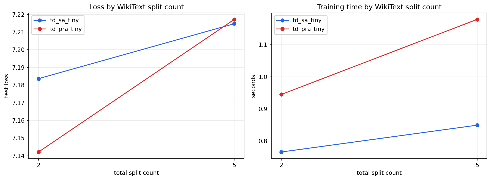

Split count is the total number of document parts, including the final prediction tail. Thus split 2 exposes one reference and split 5 exposes four. Runs share source examples, seed, tokenizer, optimizer-step budget, and sequence length.
| Model | Split Count | Reference Count | Test Loss | Valid Loss | Disabled Loss | Shuffled Loss | Reference Top1 Accuracy | Processed Tokens | Train Seconds | Validation Seconds |
|---|---|---|---|---|---|---|---|---|---|---|
| td_sa_tiny | 2 | 1 | 7.18366 | 7.17893 | 7.17893 | 7.17893 | 0 | 927 | 0.766081 | 0.0395839 |
| td_sa_tiny | 5 | 4 | 7.21477 | 7.22003 | 7.22003 | 7.22003 | 0 | 1157 | 0.849524 | 0.0841176 |
| td_pra_tiny | 2 | 1 | 7.14212 | 7.13765 | 7.16778 | 7.138 | 1 | 927 | 0.945177 | 0.0803925 |
| td_pra_tiny | 5 | 4 | 7.21722 | 7.22043 | 7.24805 | 7.21997 | 0.125 | 1157 | 1.17877 | 0.258128 |
